Overview What Tribal Plans Say Funding
Energy projects, funding and grid decisions on Tribal terms
The Tribal Energy Feasibility Task Force supports member Tribes in judging energy projects, transmission and regional markets on their own terms. Pick a question; every figure opens its source.
Efficiency: 32 Tribes name it in their public plans.
11 of 22 programs in the catalog were open at the check. Tribal HEEHR home rebates (IRA 50122): applications are due 12/11/2026.
It is forming through the ATNI Energy Committee, under two resolutions, and follows the transmission, rate and leasing decisions in front of member Tribes.
Efficiency, solar, and electrification lead 44 Tribes' public plans; no finding concerns offshore wind or marine energy
A machine-assisted reading of public plans built 10/29/2026, not a Tribe's own assessment: it endorses no project and ranks no Tribe, and a type's absence is not evidence of opposition or disinterest.
- Efficiency32 Tribes
- Solar30 Tribes
- Electrification25 Tribes
- Wind11 Tribes
- Battery storage11 Tribes
- Microgrids8 Tribes
- Hydropower7 Tribes
- Biomass6 Tribes
- Geothermal5 Tribes
- Biogas and biofuels2 Tribes
- Hydrogen2 Tribes
- Offshore wind0 Tribes
- Marine0 Tribes
- Installed or operating
- Planned or funded
- Assessed or sited
- Goal or interest
32 Tribes
Energy efficiency and weatherization: 32 Tribes, by the most advanced stage found: 8 installed or operating, 15 planned or funded, 2 assessed or sited, 7 goal or interest. Limit: A machine-assisted reading of public plans, not a Tribe's own assessment; a type's absence is not evidence of a Tribe's opposition or disinterest.
About this figure
Tribes covered: 56 Tribes. Limit: ATNI listing comes from a capture of ATNI's directory page; it records a listing, not membership certification.
No finding after search: 9 Tribes. Limit: Documents read showed no energy work the Tribe owns, studies, or plans; absence is not evidence of opposition or disinterest.
No finding yet, documents pending: 2 Tribes. Limit: Documents still awaiting text extraction may add evidence.
No document held: 1 Tribe. Limit: The library holds no document attributed to this Tribe yet; public discovery may have missed its plans.
Documents read: 279 documents. Limit: The library holds what public discovery found and could download, so a Tribe's newest plan may be missing.
Documents awaiting text extraction: 22 documents. Limit: A Tribe's entry may change when these documents are read.
A Tribe counts once per type, at the most advanced stage found, from an entry that lists up to five types. Types are ranked within one Tribe's entry; no Tribe is ranked against another.
7 partly verified
Table
| Energy type | Installed or operating | Planned or funded | Assessed or sited | Goal or interest | All | Claim |
|---|---|---|---|---|---|---|
| Efficiency | 8 | 15 | 2 | 7 | 32 | ep-032 partly verified |
| Solar | 12 | 11 | 4 | 3 | 30 | ep-021 partly verified |
| Electrification | 2 | 22 | 0 | 1 | 25 | ep-033 partly verified |
| Wind | 1 | 0 | 9 | 1 | 11 | ep-022 partly verified |
| Battery storage | 1 | 6 | 1 | 3 | 11 | ep-030 partly verified |
| Microgrids | 0 | 4 | 1 | 3 | 8 | ep-031 partly verified |
| Hydropower | 3 | 0 | 2 | 2 | 7 | ep-024 partly verified |
| Biomass | 0 | 4 | 0 | 2 | 6 | ep-027 partly verified |
| Geothermal | 2 | 1 | 0 | 2 | 5 | ep-026 partly verified |
| Biogas and biofuels | 0 | 1 | 0 | 1 | 2 | ep-028 partly verified |
| Hydrogen | 0 | 1 | 0 | 1 | 2 | ep-029 partly verified |
| Offshore wind | 0 | 0 | 0 | 0 | 0 | ep-023 partly verified |
| Marine | 0 | 0 | 0 | 0 | 0 | ep-025 partly verified |
13 rows
- Tribes covered: 56 Tribes. Limit: ATNI listing comes from a capture of ATNI's directory page; it records a listing, not membership certification. ep-002 partly verified
- No finding after search: 9 Tribes. Limit: Documents read showed no energy work the Tribe owns, studies, or plans; absence is not evidence of opposition or disinterest. ep-007 partly verified
- No finding yet, documents pending: 2 Tribes. Limit: Documents still awaiting text extraction may add evidence. ep-008 partly verified
- No document held: 1 Tribe. Limit: The library holds no document attributed to this Tribe yet; public discovery may have missed its plans. ep-009 partly verified
- Documents read: 279 documents. Limit: The library holds what public discovery found and could download, so a Tribe's newest plan may be missing. ep-004 partly verified
- Documents awaiting text extraction: 22 documents. Limit: A Tribe's entry may change when these documents are read. ep-003 partly verified
20 sourced figures from 1 document: 20 partly verified.
Take this plate
4 dated deadlines in the catalog through 08/31/2028; 8 more open or forecasted programs carry no date
Dated programs rechecked 11/05/2026; other statuses checked 10/29/2026. Program facts, not eligibility determinations; confirm each with the agency.
- today 11/05/2026 BPA Tribal efficiency grants
- 36 days 12/11/2026 Tribal HEEHR home rebates (IRA 50122)
- 104 days 02/17/2027 Grid Resilience formula grants (IIJA 40101(d))
- 665 days 08/31/2028 DOE Tribal Energy Financing (loans)
0 Passed
8 No date
- DOE Indian Energy technical assistance
- Weatherization Assistance Program
- LIHEAP
- HUD IHBG
- HUD ICDBG
- FEMA HMGP
- USDA Community Facilities
- IRS elective pay
Days counted from 11/05/2026.
36 (12/11/2026) days
Tribal HEEHR home rebates (IRA 50122): 12/11/2026. Tribes must apply to DOE for their formula awards by this date (Program Notice 26-3). Read 11/05/2026 on the agency's own page. A program fact, not an eligibility determination. Agency figure, verified against the source.
1 verified
Table
| Program | Deadline | Status | Status checked | Claim |
|---|---|---|---|---|
| BPA Tribal efficiency grants | 11/05/2026 | open while funds last | 11/05/2026 | ef-011 verified |
| Tribal HEEHR home rebates (IRA 50122) | 12/11/2026 | open | 11/05/2026 | ef-012 verified |
| Grid Resilience formula grants (IIJA 40101(d)) | 02/17/2027 | open | 11/05/2026 | ef-013 verified |
| DOE Tribal Energy Financing (loans) | 08/31/2028 | open | 11/05/2026 | ef-014 verified |
| DOE Indian Energy technical assistance | No date | open | 10/29/2026 | ef-021 partly verified |
| Weatherization Assistance Program | No date | open | 10/29/2026 | ef-022 partly verified |
| LIHEAP | No date | open | 10/29/2026 | ef-023 partly verified |
| HUD IHBG | No date | open | 10/29/2026 | ef-024 partly verified |
| HUD ICDBG | No date | forecasted | 10/29/2026 | ef-025 partly verified |
| FEMA HMGP | No date | open | 10/29/2026 | ef-026 partly verified |
| USDA Community Facilities | No date | open | 10/29/2026 | ef-027 partly verified |
| IRS elective pay | No date | open | 10/29/2026 | ef-028 partly verified |
12 rows
14 sourced figures from 13 documents: 4 verified, 10 partly verified.
Take this plate
The task force at a glance
- Status
- Forming, through the ATNI Energy Committee. Its charge, membership and reporting line are not yet confirmed.
- Grounds
- Resolution #2024-23 (PDF) set up a limited-duration task force on offshore wind. Resolution #2024-35 (PDF) calls for Tribal leadership and oversight in grid governance and transmission planning.
- What it follows
- Transmission planning and siting rules, Bonneville Power Administration rate cases, offshore wind leasing and Tribal energy bills, each in Policy Watch.
- What it proposes
- Shared research, a common set of due-diligence questions, aligned advocacy, and tools a Tribe runs on its own systems. Why it exists
- Taking part
- Tribal leaders and staff take part through the ATNI Energy Committee. Contact ATNI
“ATNI member Tribes have demonstrated leadership in clean energy developments and understand the importance of renewable energy and the preservation and restoration of our climate, and the importance of completing the necessary due diligence to ensure preventable harm is avoided.”
Why the task force exists
Decisions about new energy projects, transmission lines, and a Western electricity market carry consequences for Tribal homelands, waters, and cultural resources. This task force supports member Tribes in assessing those decisions on their own terms, building on the work the Affiliated Tribes of Northwest Indians (ATNI) began on offshore wind.
Feasibility here means more than engineering and cost. The resolutions behind this task force ask whether a project respects Tribal sovereignty, culture, and sacred sites; protects water, fish, lands, and migratory species; and keeps decision-making authority with Tribal governments.
Member Tribes have led on clean energy, and they hold that due diligence comes first. The task force makes that diligence shared work: common research, common questions, and a common voice in the forums where energy decisions are made.
What the Task Force Proposes to Do
The task force is forming; its charge, membership, and reporting line are not yet confirmed, and it proposes four kinds of work.
The Tribal Energy Feasibility Task Force is forming. Its charge, membership, and reporting line to the ATNI Energy Committee are not yet confirmed; this section describes what the task force proposes, grounded in the two resolutions behind it. ATNI established the ATNI Energy Program in 1995 so that Tribal rights and interests were represented in power and transmission issues at the Bonneville Power Administration, and the Program supports the policy initiatives of ATNI’s committees, including the Energy Committee, the body through which member Tribes take part.
The starting point is the position member Tribes recorded in May 2024. Resolution #2024-23 (PDF) states that all ATNI member Tribes were “in alignment in opposing the continued development of offshore wind projects at this time.” The phrase “at this time” is the hinge. The resolution did not close the question of renewable energy; in the same text, member Tribes affirm their “leadership in clean energy developments” and “the importance of completing the necessary due diligence to ensure preventable harm is avoided.” What they opposed was development that outran consultation, consent, and the protection of sacred sites, submerged cultural resources, water, fish, lands, and migratory species. The limited-duration task force that resolution created was charged to research, propose policy to the membership, align advocacy, and support each Tribe’s own advocacy.
The Tribal Energy Feasibility Task Force proposes to carry that method into every energy type a Tribe may consider, onshore and offshore, generation and the systems that make generation useful. Feasibility, in this work, means a project that a Tribal government has judged on its own terms: whether it respects sovereignty, culture, and sacred places; whether it protects the relatives that depend on the water and land; whether the Tribe holds decision-making authority over it; and only then whether it pencils out. Resolution #2024-35 (PDF) supplies the second ground. It records that hydroelectric power in the Northwest “severely harmed the cultural resources and well-being of Northwestern Tribes,” and it calls for Tribal electric utilities, Tribal energy development organizations, and Tribal elected leaders to hold “oversight and leadership roles” in a Western Regional Transmission Organization, with “free, prior, and informed consent of transmission planning processes at every level.”
The task force proposes four kinds of work:
- Shared research: Public, sourced compilations on energy technologies, costs, grid and market governance, and funding, written for Tribal leaders and staff and published on this site.
- Common questions: A due-diligence question set a Tribal council can put to any developer, utility, or agency before a feasibility study is funded, drawn from the concerns Resolutions #2024-23 and #2024-35 name.
- Aligned advocacy: Briefings and draft positions for the ATNI Energy Committee and the membership, so that Tribes speaking in regional forums can speak from shared evidence while each Tribe keeps its own position.
- Support for each Tribe’s own path: Tools and data a Tribe can run on its own systems, with its own information, and share only what it chooses to share.
Whether the task force operates as a standing committee workgroup, as a successor to the limited-duration offshore wind task force, or under a new resolution is a decision for the Energy Committee and the membership. This page will record that decision when it is made.
The Offshore Wind Task Force
At the 2024 Midyear Convention, member Tribes established a limited-duration ATNI task force on offshore wind projects.
At the 2024 Midyear Convention in Canyonville, Oregon, member Tribes established a limited-duration ATNI task force on offshore wind projects (Resolution #2024-23). Federal executive actions on climate had accelerated offshore wind development off the Gulf of Maine, the Atlantic, the Gulf of Mexico, and the Pacific. Member Tribes named their concerns plainly: impacts on Tribal communities, culture, heritage, sovereignty, sacred sites, and submerged cultural resources; impacts on water, fish, lands, and migratory species; and permitting schedules that placed heavy administrative and financial burdens on Tribal governments.
The resolution charged the task force to research, propose new policy to the ATNI membership, align advocacy, and support member Tribes in their own advocacy. It records that member Tribes were aligned at that time in opposing continued offshore wind development, and it authorized the ATNI Executive Board to press for a full stop to those efforts, more meaningful consultation with Tribes, and funding for Tribal engagement. That task force is currently dormant. The Tribal Energy Feasibility Task Force carries its lessons into a wider set of energy decisions.
Tribal Leadership in Grid Governance
At the 2024 Annual Convention, member Tribes called for Tribal leadership and oversight in electric grid governance and transmission planning.
At the 2024 Annual Convention in Ridgefield, Washington, member Tribes called for Tribal leadership and oversight in electric grid governance and transmission planning (Resolution #2024-35). The resolution recognizes that hydroelectric power has severely harmed the cultural resources and well-being of Northwest Tribes, and that a Western energy market and an eventual Regional Transmission Organization (RTO) could open the way for more renewable energy while raising questions about where projects are sited and what they affect.
It calls on states, regulators, utilities, and other decision makers to give Tribal electric utilities, Tribal energy development organizations, and Tribal elected leaders oversight and leadership roles in a Western RTO. It calls for free, prior, and informed consent in transmission planning at every level, and it asks the National Congress of American Indians (NCAI) to establish a national Tribal working group on transmission and market governance.
Focus Areas
The focus areas below are proposed. Tribal leaders set them.
Feasibility Across Energy Types
Public cost data are strongest for solar, battery storage, onshore wind, geothermal, and hydropower, and weakest for marine energy and small modular reactors.
Public cost data are strongest for solar, battery storage, onshore wind, geothermal, and hydropower, and weakest for marine energy and small modular reactors, where the public record is mostly estimates (National Laboratory of the Rockies (formerly NREL) Annual Technology Baseline 2025; EIA capital cost study for the Annual Energy Outlook 2025). Cost is not the first question. The task force proposes to hold every technology to the same due-diligence sequence the resolutions describe: cultural and sacred-site review, water and fish, land and migratory species, consent and authority, and then cost, interconnection, and offtake.
A worked Northwest example is the Makah Tribe’s strategic energy plan, prepared with the Pacific Northwest National Laboratory and dated 08/2025, which found that the maximum potential of 4.8 MW of solar in Neah Bay could meet roughly 24 percent of the Tribe’s annual energy demand, while a single small wind turbine could meet roughly 0.5 percent, and named resilience hubs as a priority (PNNL-38051). Each Tribe’s numbers will differ; the method travels.
For reference costs, two public federal sources anchor the task force’s research: the Annual Technology Baseline 2025 (2023 dollars) and the EIA study above. Both report overnight capital costs before interest and incentives, and both predate recent tariff and supply-chain changes.
Grid Governance and Transmission
Resolution #2024-35 asks for Tribal oversight and leadership in a Western Regional Transmission Organization, and for free, prior, and informed consent in transmission planning.
Resolution #2024-35 asks for Tribal oversight and leadership in the formation and governance of a Western Regional Transmission Organization and for free, prior, and informed consent in transmission planning (Resolution #2024-35, PDF). The task force proposes to track where those decisions are being made, who sits at the table, and what a Tribal seat would require. The Bonneville Power Administration’s Tribal Affairs office is one standing venue; its page lists Tribal engagement on grid expansion portfolios (BPA Tribal Affairs). The questions the task force would carry are structural: Who decides where a line goes? Who decides what connects to it? Accountable to whom?
Funding Access
Most federal money for Tribal energy moves by formula, rebate, loan, or tax credit rather than by competitive grant.
Most federal money for Tribal energy moves by formula, rebate, loan, or tax credit rather than by competitive grant, and statuses change within a season. The task force keeps a public catalog of programs with each status read from the agency’s own page on a stated date. It also proposes to frame the tax questions plainly: Public Law 119-21, enacted in July 2025, changed the clean energy credits, including timelines for wind and solar (H.R. 1, 119th Congress), while the Internal Revenue Service continues to publish elective pay guidance for Indian Tribal governments (IRS elective pay page, Publication 5817-F). How those changes apply to a Tribally owned project is a question for each Tribe’s counsel and tax advisers, not a conclusion this site draws.
A live scan of Grants.gov on 10/29/2026 found no posted opportunity open to Tribal governments that matched an energy keyword in its title or synopsis; 3 forecasted HUD notices belong to catalog programs. The notice records, checked 11/05/2026, show 2 ICDBG forecasts and 1 IHBG competitive forecast. The absence of a notice is not evidence that funding does not exist. This product uses the Grants.gov API but is not endorsed or certified by the U.S. Department of Health and Human Services.
Resilience
The Department of Energy’s report to Congress finds that Tribal households carry an energy burden 28 percent above average.
The Department of Energy’s report to Congress on Tribal electricity access finds that Tribal households carry an energy burden 28 percent above average, that an estimated 17,000 Tribal homes have no electricity, and that Tribal communities experience 6.5 times more outages per year than the national average (DOE Tribal Energy Access). In ATNI Tribes’ own public plans, energy efficiency, solar, and home electrification are the types named most often (see the first question above). The task force proposes to treat resilience as the near-term feasibility question: what keeps the lights on at the end of the line, what cuts the bill, and what a Tribe can own outright.
How hot summers may get in the counties where data centers are proposed is on the Data Centers page, under Where.
Programs and Tools
-
What Tribal plans say about energy
A public dataset that reads each ATNI-listed Tribe’s own public planning documents for energy types, Tribe by Tribe, with the passage and page behind each finding. It is a machine-assisted reading of public plans, not a Tribe’s own assessment, and it endorses no project. A type’s absence is not evidence of a Tribe’s opposition or disinterest, and a Tribe can ask ATNI to correct or remove its entry.
-
Funding catalog
Federal programs and the Bonneville Power Administration’s Tribal efficiency grant, each status read from the agency page, the Grants.gov record, or the statute on the date shown. “Open” for a formula, rebate, loan, or tax program means the program is operating, not that money is waiting. These are program facts, not eligibility determinations; the Tribe decides whether and how to apply.
-
ATNI-GeoBase, siting that keeps data on Tribal machines
A local-first geospatial desktop application for renewable-energy siting that ATNI’s Tribal Climate Resilience team is developing. Its published source (snapshot prepared 09/08/2026) describes deterministic screening with distinct exclusions, constraints, and unknowns, and applies the Tiered Sovereign Data Framework, which ATNI endorsed in Resolution #2026-034 (PDF). Cultural resource layers can stay on a Tribe’s own computer while staff screen a proposal. The public repository is source only, under the PolyForm Noncommercial 1.0.0 license, carries the banner “DEVELOPMENT BUILD - SOVEREIGNTY CONTROLS NOT ENFORCED,” and is not approved for operational use; it ranks no sites, and its results are screening leads, not feasibility findings.
-


Policy Sentinel
The policy search tool that ATNI Climate builds for Tribal governments. The saved searches and the follow list on the Sources page open in it, and it keeps a followed list in the reader’s own browser.
Policy Watch
The dockets, rules and bills this task force follows, newest federal record first. Every saved search and followed item, and the steps to follow them in Policy Sentinel, are on the Sources page.
- Revision of ACS-26 Rate Schedules Bonneville Power Administration, latest record 10/07/2026
- Revision of Fiscal Year 2026-2028 Power Rate Schedules and General Rate Schedule Provisions for the Remainder of the BP-26 Rate Period Bonneville Power Administration, latest record 09/17/2026
- Building for the Future Through Electric Regional Transmission Planning and Cost Allocation Federal Energy Regulatory Commission, latest record 06/09/2026
- Entities Wholly Owned by Indian Tribal Governments Treasury Department; Internal Revenue Service, latest record 12/16/2025
- Alliance for Tribal Clean Energy; Notice of Petition for Rulemaking and Intent To Hold Tribal Consultation Meetings Federal Energy Regulatory Commission, latest record 09/26/2024
- Pacific Wind Lease Sale 2 for Commercial Leasing for Wind Power Development on the Outer Continental Shelf Offshore Oregon, Final Sale Notice Bureau of Ocean Energy Management, latest record 09/03/2024
- Applications for Permits To Site Interstate Electric Transmission Facilities Federal Energy Regulatory Commission, latest record 05/29/2024